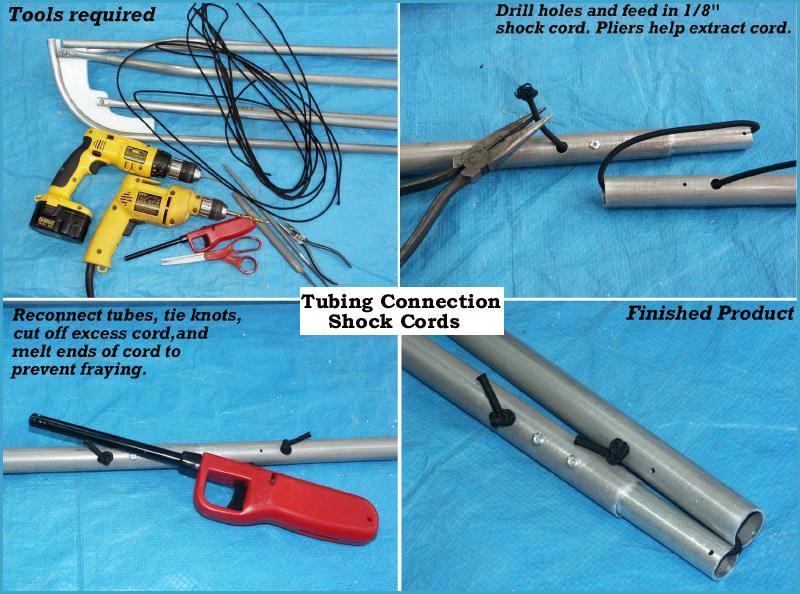

| Tubing Shock Cords | Menu Previous Page Next Page |
|

Shock Cord - Shock cords are attached at each tube section to keep the frame together during assembly and
storage. It is very difficult to identify what tube fits where if the tubes are not attached with shock cord. The shock cord
is not used as a means to strengthen or reinforce the frame.
|
|